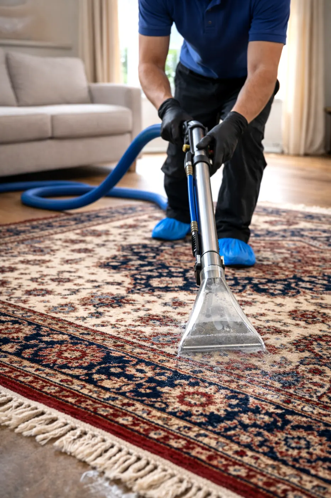

1
Inspect the rug
We look at the rug first, the level of soil, the main marks and the type of use it has had.
JW Carpet Care provides professional rug cleaning across Worcestershire and the West Midlands for household rugs that need more than a quick surface freshen up.
Rugs pick up a lot of daily use. Shoes, spills, dust, pets and general traffic can all leave them looking dull long before the rest of the room needs attention.
JW Carpet Care provides professional rug cleaning across Worcestershire and the West Midlands using a proper process designed to break down built up soil, lift dirt from the fibres and leave the rug looking cleaner, fresher and more presentable.
Whether the rug sits in a lounge, hallway or bedroom, the aim is simple: improve the appearance, freshen the feel of the room and help the rug look worth keeping.

A simple careful process for a cleaner fresher rug.
We look at the rug first, the level of soil, the main marks and the type of use it has had.
The main build up areas are treated first so dirt and marks start loosening before extraction begins.
The loosened soil is flushed out properly, helping leave the rug cleaner, fresher and easier to present.
With rugs, the right cleaning process can make a noticeable difference to colour, freshness and the overall feel of the room.
Choose the town nearest to you for local coverage and contact.
Professional rug cleaning support in Worcester for homes and rental properties.
View Worcester →Cleaner fresher household rugs for busy homes and everyday use.
View Bromsgrove →Rug cleaning help for homes that need a cleaner more presentable finish.
View Kidderminster →Local rug cleaning support with fast contact and straightforward service.
View Redditch →Coverage for household rug cleaning across Worcester, Bromsgrove, Kidderminster, Redditch and surrounding areas.
Use the area pages as the local route into the site for rug cleaning coverage.